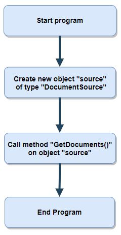
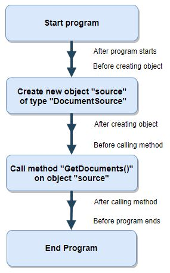
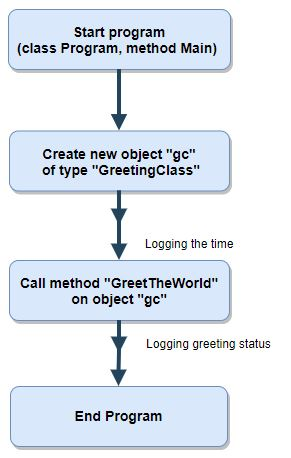

Daugiau informacijos apie aspektinio programavimo taikymą:
Aspektinis programavimas (angl. Aspect-Oriented Programming) - programavimo metodika, nustatanti reikalingus poveikio taškus (angl. join points) programos komponentuose ir jais sistemingai keičianti programos savybes. Naudinga, kai programai reikia suteikti naujų savybių ar veikimą pakreipiant kita linkme. Pavyzdžiui, kai programą reikia papildyti derinimo galimybėmis, rinkti statistiką apie veikimą, jos atliekamas operacijas ir pan. Tokiais atvejais aspektiniu programavimu galima išvengti tarpkomponentinių ryšių rankinio perprogramavimo. Aspektinis programavimas praplečia objektinį programavimą.
Objektiniame programavime esminis dalykas yra objektas, aspektiniame programavime - aspektas (angl. aspect). Aspektas - programos savybių klasė, susieta su kitomis programos klasėmis, bet tiesiogiai, neįtakojanti jų pagrindinės funkcijos. Aspektinio programavimo pagrindinis tikslas - pašalinti kopijuojamo, pasikartojančio programinio kodo fragmentus, pašalinti poreikį perprogramuoti programos komponentus, pasikeitus tam tikroms programos savybėms, atskirti metodo pagrindinę funkciją nuo pašalinės. Aspektiniu programavimu labai patogu realizuoti nefunkcinius programinei įrangai keliamus reikalavimus tokius, kaip veiksmų fiksavimas, klaidų fiksavimas, įvairios metrikos (greitaveikos, atminties naudojimo ir kt.) stebėjimas ir fiksavimas.
Dar viena svarbi sąvoka aspektiniame programavime yra veiksmų persipynimas (angl. cross-cutting concerns) - aspektas įtakojantis kitus veiksmus. Tarkime, turime metodą kuris atlieka X operaciją. Taip pat, turime veiksmų fiksavimo (angl. logging) metodą, kuris atlieka operaciją L. Jei norime, kad atliekant X operaciją, būtų fiksuojami operacijos veiksmai, tai reikia vykdyti ir L operaciją. Taigi, į metodą, atliekantį X operaciją reikia integruoti L operaciją. O kaip elgtis, jei yra metodas, realizuojantis Y operaciją, metodas Z operacijai ir t.t., kurių veiksmus taip pat reikia fiksuoti? Taip ir atsiranda pasikartojančio kodo fragmentų. Panagrinėkime pavyzdį (1 pavyzdys).
Pavyzdyje matome, kad veiksmų fiksavimas (žarg. log'inimas) užima didesnę metodo GetDocuments(...) dalį. Dar didesnė problema kyla dėl to, kad antrame pavyzdyje pateiktas šablonas turi būti realizuotas kiekviename log'inamajame metode. Ko pasekoje, gauname didelį kodo pasikartojamumo lygį.
Aspektinis programavimas leidžia išlaikyti metode parašytą kodą (realizuojantį pagrindinę metodo funkciją) nepaliestą, suteikdamas būdą įtraukti aspektą į egzistuojantį kodą, jo neperrašant.
Skyrelio pradžioje susipažinome su aspektinio programavimo apibrėžimu. Prisiminkime dar kartą, aspektinis programavimas - programavimo metodika, nustatanti reikalingus poveikio taškus programos komponentuose ir jais sistemingai keičianti programos savybes. Panagrinėkime, kas yra poveikio taškas. Panagrinėkime pirmo pavyzdžio srautų diagramą (angl. flowchart) be poveikio taškų (1 pav.).

1 pav. Srautų diagrama be poveikio taškų.
Kaip matome, tai yra įprasta programos veikimo (nuo pradžios iki pabaigos) srautų digrama: programa startuoja, sukuria objektą, iškviečia objekto metodą ir programa užbaigiama. Panagrinėkime pirmo pavyzdžio srautų diagramą su poveikio taškais (2 pav.).

2 pav. Srautų diagrama su poveikio taškais.
Šioje diagramoje, matome išskirtus poveikio taškus: prieš ir po kiekvienos funkcijos yra įterpti poveikio taškai, per kuriuos galime įterpti tam tikrą aspektą.
Parašykime aspektinio programavimo „Hello, World!” programą.
Aspektiniam programavimui C# kalboje naudosime PostSharp plėtinį. Parsisiųsti šį plėtinį ir įsidiegti galima iš Visual Studio Marketplace. Diegiant paketą, pasirenkame nemokamą licenciją PostSharp Essentials. Pačiame projekte, naudojant NuGet paketų tvarkyklę įsidiegiam reikalingas bibliotekas.
Sukuriame aspektą GreetingAspect:Parašėme aspektinio programavimo programą. Kaip matome, nuo objektinio programavimo paradigmos programos skiriasi tuo, kad atsiranda aspektas - speciali klasė, kildinta iš klasės OnMethodBoundaryAspect. Klasėje OnMethodBoundaryAspect yra apibrėžti virtualūs metodai: OnEntry(...), OnExit(...), OnException(...) ir pan., apibrėžiantys programos poveikio taškus. Šios programos srautų diagrama pavaizduota 3 pav.

3 pav. „Hello, World!” programos srautų diagrama.